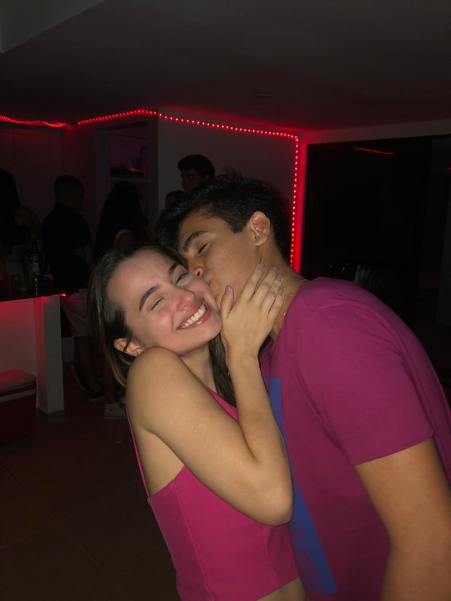
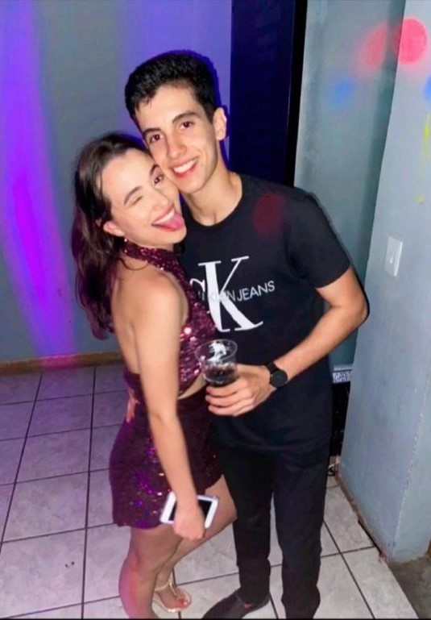
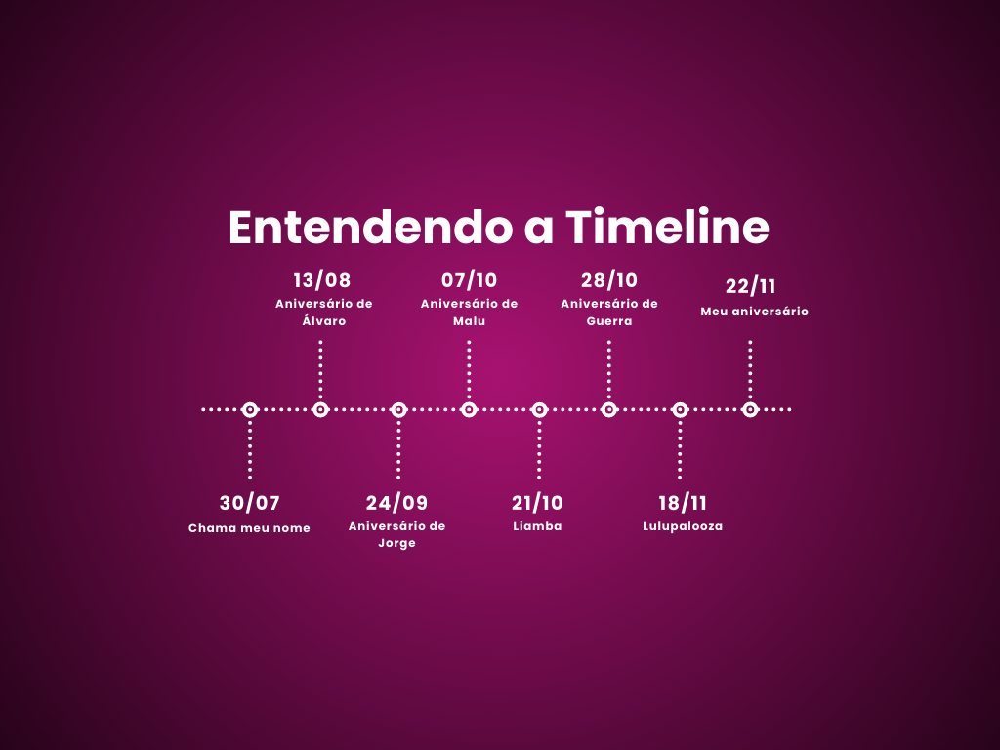
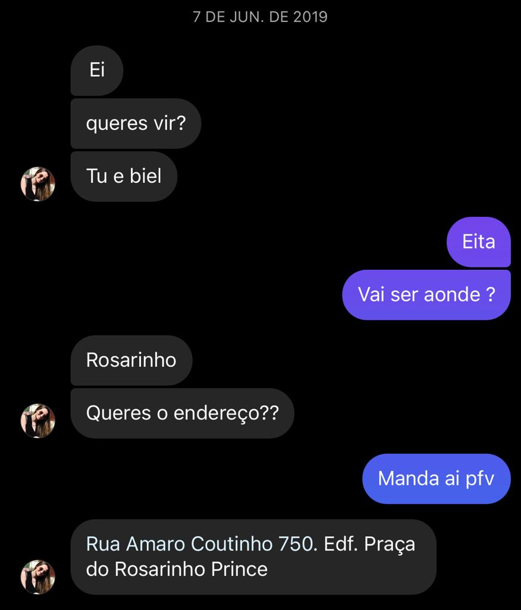
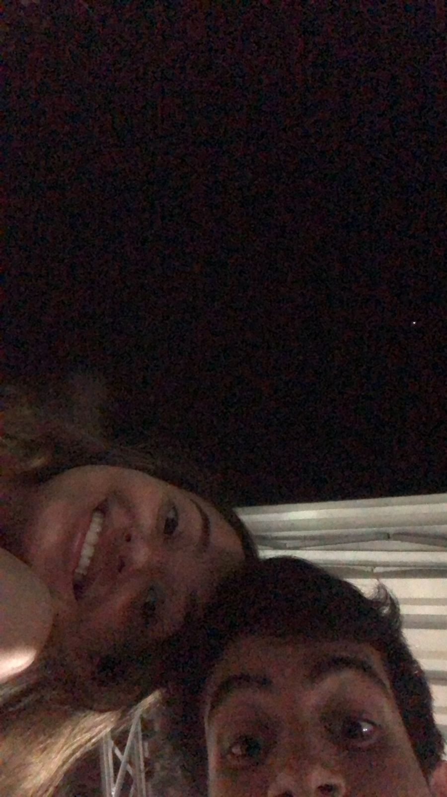
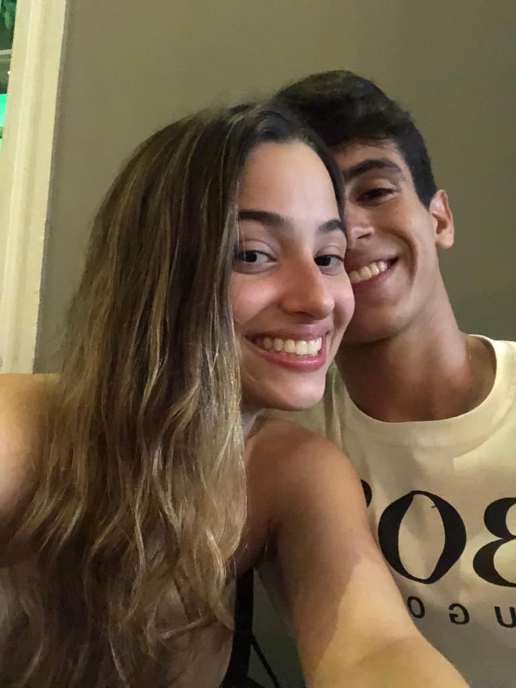
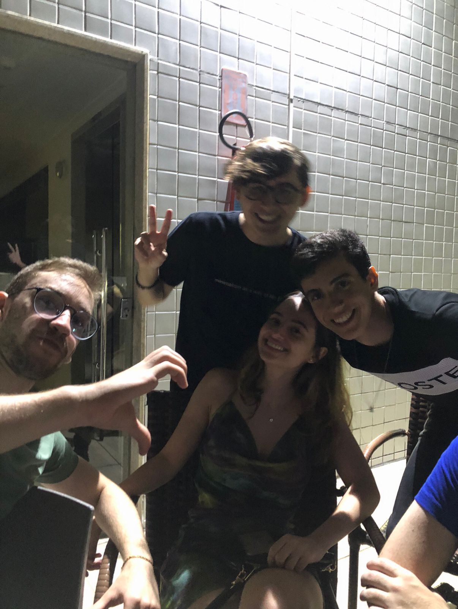
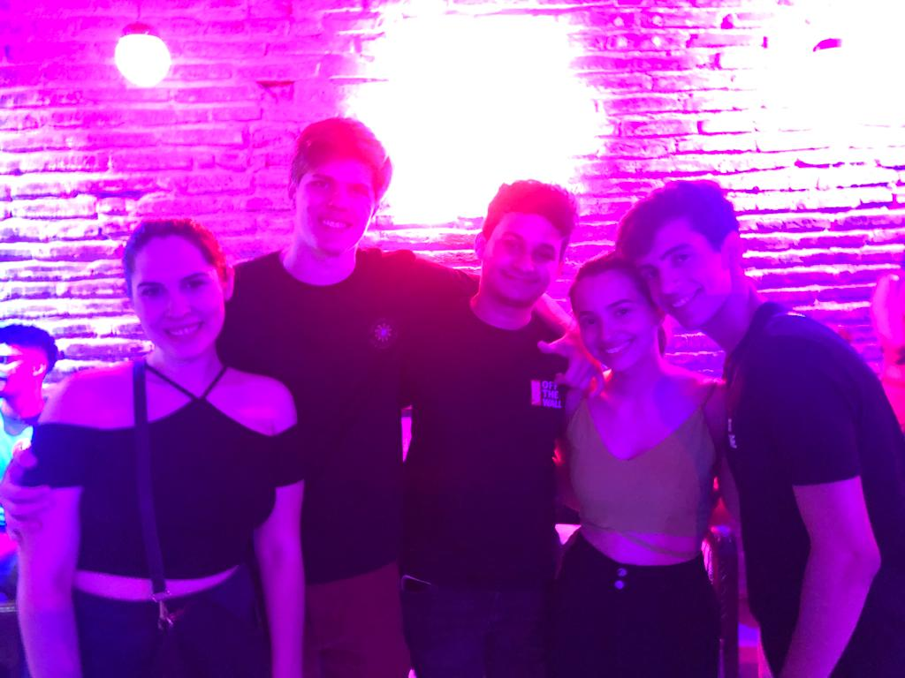
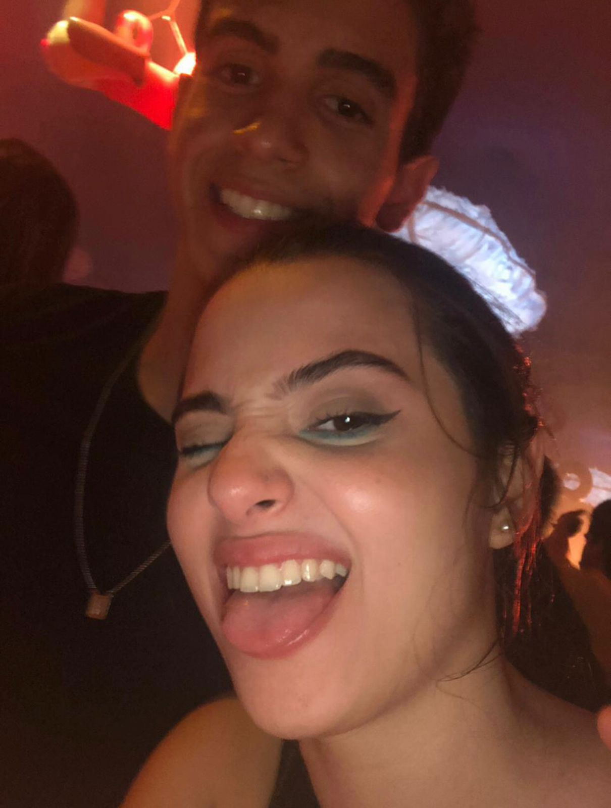
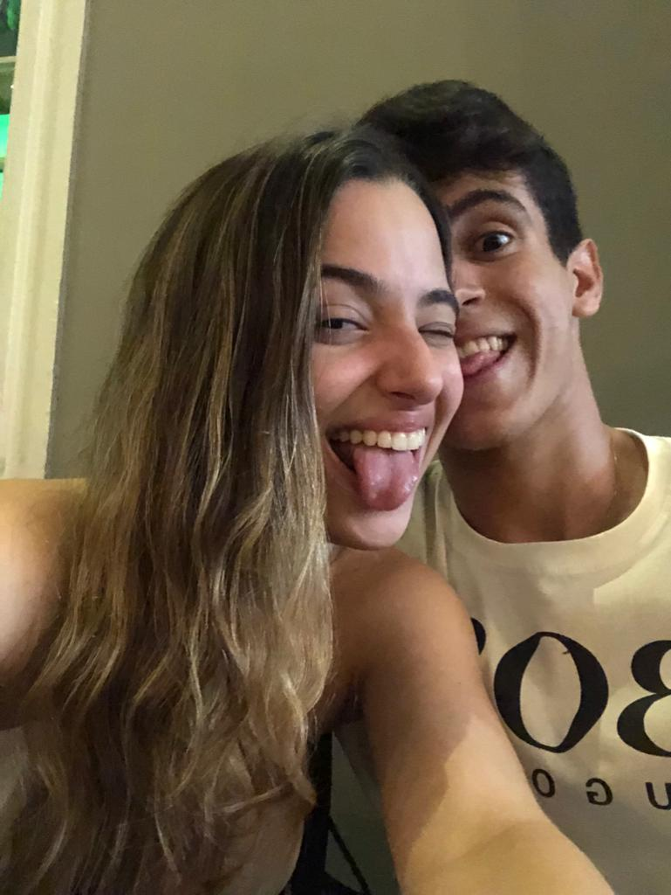

Recapitulando
Pois é, amoreco meu, se em 1 ano as coisas podem mudar drasticamente, imagine em 3 anos e meio... o tempo voa quando a gente se diverte, e aos poucos vamos nos consolidando cada vez mais no grupo de casais remanescentes que estão juntos há muito tempo.
Por outro lado, cada momento com você é tão único e especial, que dá a certeza de que três anos e meio ainda são muito pouco comparado com o que eu quero construir com você.
Completamos, então, nosso primeiro ciclo de Copa do Mundo… e que venha o próximo, quem sabe com um final diferente kkkk (ainda que eu não esteja tão confiante, e talvez nem tenha o Pombo F).
Mocálculos
Alguns números para refrescar a memória
(e contando)
(vamos aumentar isso, implhoro...)
Copa e ciclos
Viagens
Gente nova
Trabalho
Lore insalubre
Evolução do MOC
Abertura
Do fim daquela Copa ao começo da próxima
Um bloco de abertura para amarrar a ideia central: o mundo girou, muita coisa mudou, alguns casais ficaram pelo caminho, outros sobreviveram bravamente, e a nossa história só foi ficando maior.
Copa do Mundo, ato II
Mais um ciclo chegando
Na última vez, a Copa serviu de cenário para o começo do capítulo mais importante da minha vida. Agora ela aparece de novo, não como ponto de partida, mas como prova do tanto de chão que a gente já percorreu. Teve o desfecho da edição passada, Álvaro chorando, os casais remanescentes resistindo e aquela sensação deliciosa de perceber que, no meio de tanta mudança, nós seguimos aqui.
Luiza e Parizio
Álvaro e Bianca
Gabigol e Clara
Mocalana segue invicto

Timeline
Os marcos desse período
Em vez de despejar tudo em texto, a ideia aqui é quebrar a história em acontecimentos-chave. Cada card pode depois receber suas fotos, datas, vídeos ou prints corretos.
SP trip
Um daqueles momentos em que a relação ganha outro tamanho. Viagem sempre mostra sintonia, rotina improvisada, perrengue, parceria e aquele tipo de lembrança que vira referência interna para o resto da vida.

Milagres pela primeira vez
Primeira ida para Milagres, novo cenário, novas fotos, nova energia. Um ótimo ponto para colocar um mini carrossel depois, porque tem toda cara de capítulo visual.

Neyo e canelite
O tipo de dupla que já nasce com nome de subtítulo. Viagem do Rio com potencial máximo para virar card memorável: visual forte, piada interna e caos muito bem distribuído.

Accenture + RBianco
Essa fase não foi só emocional. Também teve crescimento profissional, mudança de contexto, mais casca, mais repertório e mais bagagem para olhar esse próprio projeto com outros olhos.

Moconix, Bernardos e cia.
Os universos paralelos foram se expandindo. Você me levando para dentro de novas órbitas, eu virando figura conhecida, ganhando espaço e sendo adotado por cada vez mais núcleos desse ecossistema.

Tattoo e fase fit
Até a versão do personagem foi mudando. Tattoo, fase fit, novos hábitos, novas versões, e a sensação de que de alguma forma a vida foi ficando cada vez mais com a nossa cara.

Capítulos
Organizando a bagunça em temas
Um jeito mais elegante de contar muita coisa sem cansar. Você pode trocar, remover ou expandir os cards depois sem quebrar o layout.
Viagens que viraram referência
SP, Milagres, Rio, Amazônia. Cada viagem com uma estética própria e uma boa história para render fotos, mapas, mini relatos e lembranças favoritas.
Gente que me adotou
Saulinho, Peu, Bacelar e todos os agregados que no começo pareciam universo paralelo e hoje praticamente me tratam como patrimônio tombado.
Profissão e evolução
Accenture, RBianco, mais experiência, mais senso estético, mais noção de estrutura e boas práticas. Essa página também conta essa história.
Caos inesquecíveis
Limpando vômito, desmaio no Spazio, Schneider, canelite, insalubridades diversas e todo o tipo de situação que num relacionamento saudável vira patrimônio narrativo.
Galeria
Uma grade visual para quebrar o ritmo
Aqui a ideia é trazer dinamismo. Mesmo com placeholders, já dá para sentir como a página respira melhor quando as imagens participam da narrativa.




Accordion
Histórias que merecem expandir ao clique
Esse formato evita uma parede de texto e ainda cria um ar mais interativo. Cada item pode receber depois a sua versão final, sem pressa.
Limpando vômito
Esse é o tipo de episódio que não cabe em legenda curta. Pode virar um relato engraçado, com contexto, consequência e aquele fechamento que só vocês dois vão achar tão bom quanto realmente foi.
Schneider
Apenas um nome, mas já com energia suficiente para render bloco próprio. Vale tratar como micro-lore: apresentar, contextualizar e fechar com uma frase final forte ou engraçada.
Desmaio no Spazio
Excelente candidato para card expansível, porque chama atenção pelo título e só depois entrega a história. Isso ajuda muito a deixar a leitura leve e curiosa.
Amazônia, Paulo e Amanda
Aqui o tom pode ser um pouco mais contemplativo. Algo na linha de “em breve seremos nós”, conectando viagem, futuro, casal e o tipo de projeção bonita que essa página merece ter.
Milestones
Momentos que merecem vitrine própria
Esses blocos funcionam como pequenas conquistas desbloqueadas. Ficam ótimos para pontos importantes da vida adulta e da história do casal.
Accenture + RBianco
Uma fase para mostrar crescimento profissional com orgulho. O tipo de coisa que muda rotina, visão de futuro e até o jeito de construir um projeto como esse.
Bernardos e pai presente
De pouco a pouco fui sendo querido, depois adotado, depois promovido. Hoje tem estudo com Marina, presença confirmada e um cargo afetivo que só cresce.
Casamento de Paulo e Amanda
Maria Pia, a cerimônia, a atmosfera e a sensação inevitável de olhar para tudo isso e pensar: em breve seremos nós. Um bloco perfeito para foto bonita e texto curto.
Mapa afetivo
Lugares que contam essa fase
Mesmo sem um mapa literal por enquanto, dá para organizar os destinos como se fossem pins de memória. Fica elegante e fácil de expandir depois.
Onde a vida real acontece
O lugar-base. Onde a rotina, os grupos, os eventos, os dramas e as melhores cenas continuam acontecendo.
Escala de expansão
Viagem grande, energia grande, memórias grandes. Um ótimo bloco para fotos mais urbanas e texto mais cinematográfico.
Primeira vez
Praia, descanso, estética bonita e potencial enorme para uma galeria mais contemplativa.
Neyo e canelite
Uma viagem com nome próprio e alma de subtítulo. Só isso já justifica existir aqui.
Olhar para frente
Uma memória que já conversa com o futuro e com a ideia de projeto de vida compartilhado.